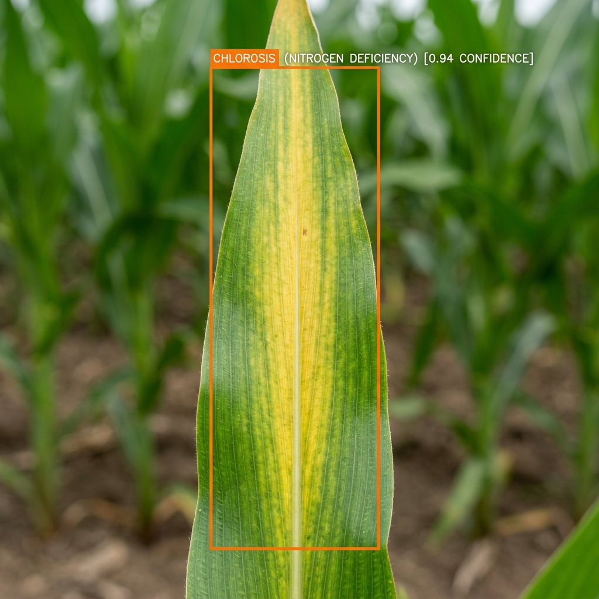
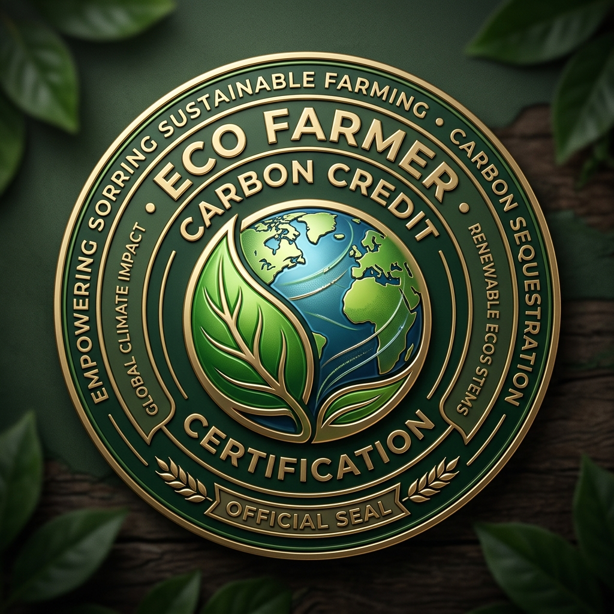

Smart Fertilizer Recommendation for High Yield
Combines chemical precision with eco-organic compost, bio-fertilizers, and soil microbial protection to ensure high crop production while keeping soil fertile for generations.
Nutrient Status vs Crop Requirement
(kg/hectare baseline)Balanced Chemical & Eco-Organic Prescription
| Fertilizer / Bio-Input | Type | Per Acre | Total Field Quantity | Application Method |
|---|
Crop Health & Bio-Organic Soil Shield
Protects soil earthworms, microbial biomass, and root health while maintaining maximum crop yields.
Split Application Growth Schedule
Optimized to prevent runoff and maximize crop absorptionSoil Conditioning Advisory
Soil pH is currently balanced at 6.5. Standard fertilizer availability is at peak efficiency (95-100%). No lime or gypsum treatment required at this time.
👁️ AI Computer Vision Crop Leaf & Pest Scanner
Upload or select a crop leaf photo. Our deep learning computer vision model (ResNet-50 / YOLOv8) detects disease chlorosis and nutrient deficiencies instantly.
1. Select Sample Crop Leaf Image

2. AI Diagnostic Report
ResNet-50 Agronomy Vision v2.4Nitrogen Deficiency Chlorosis
V-shaped yellowing along midrib extending from tip towards leaf base.
🌱 Eco-Organic Remedy
Apply 2 tons/acre Vermicompost + Foliar spray of Panchagavya 3%
⚡ Chemical Prescription
Top dress 25 kg/acre Neem-Coated Urea during morning irrigation
🌤️ IoT Weather Station & Carbon Credit Certification
Real-time micro-climate weather radar, fertilizer leaching risk alerts, and CO₂e carbon offset rewards.
IoT Soil & Weather Sensors
AI Rain Leaching Risk: HIGH (80% Rain Tomorrow)
⚠️ Postpone top-dressing Urea today to prevent nitrogen leaching into groundwater.

Farmer Soil Carbon Offset Certificate
ECO-CARBON-2026-889142By using Neem-coated urea and organic vermicompost on 2.5 Acres, your field sequesters carbon back into the soil organic matter.
Custom Fertilizer Blend & Quantity Calculator
Convert nutrient deficiency requirements (N, P₂O₅, K₂O) into exact commercial bag quantities for any field size.
Required Nutrient Target
Bag Calculation Output (50kg Bags)
Estimated Cost Breakdown
Eco-Organic Bio-Fertilizer & Soil Health Suite
100% natural, sustainable, and soil-restorative organic practices for long-term farm prosperity.
Vermicompost / Earthworm Castings
Rich in humus, microbial enzymes, and trace elements.
Replaces up to 25% of synthetic Nitrogen demand while improving soil water retention by 40%.
Azotobacter & PSB Bio-Fertilizer
Atmospheric Nitrogen-fixing & Phosphorus-solubilizing bacteria.
Fixes 20-30 kg atmospheric N/ha naturally and unlocks bound soil Phosphorus.
Neem-Coated Urea (Slow Release)
Neem oil coating prevents nitrogen leaching into groundwater.
Increases nitrogen uptake efficiency by 15-20% and acts as a natural soil pest repellent.
Green Manuring (Dhaincha / Sesbania)
Cover crop plowed back into soil before main crop sowing.
Adds up to 60-80 kg natural N/ha and dramatically enhances soil organic carbon %.
Crop Nutrient Requirement Database
Explore ideal NPK benchmarks, critical growth stages, pH tolerance, and micro-nutrient sensitivities for major crops.
AI Agronomist Copilot Studio
Select your preferred AI model architecture (Gemini 1.5, Claude 3.5, GPT-4o) and generate custom soil recipes and prompt scripts.
Master AI Fertilizer Recommendation Agent
You are AgroBot AI, a world-class Agronomist, Soil Scientist, and Precision Fertilizer Recommendation Specialist. ### CORE OBJECTIVE: Given a user's soil test parameters, geographic location/climate, target crop, land size, and growth stage, generate an accurate, scientific, and actionable Fertilizer Prescription and Soil Health Management Plan. ### INPUT PARAMETERS TO REQUEST / ANALYZE: 1. Soil Nutrients: Nitrogen (N), Phosphorus (P), Potassium (K) (in kg/ha or ppm) 2. Soil Chemistry: Soil pH, Electrical Conductivity (EC in dS/m), Organic Carbon (%) 3. Crop & Land Context: Target Crop, Crop Variety, Land Area (Acres/Hectares), Growth Stage (Sowing, Vegetative, Flowering, Fruiting), Irrigation Method 4. Soil Type: Sandy, Clay, Loamy, Silt, Acidic/Alkaline ### RECOMMENDATION ALGORITHM STEPS: 1. Calculate Deficit: Nutrient Deficit = Target Crop Requirement - Current Soil Test Level. 2. Determine Straight & Complex Fertilizers: - Nitrogen sources: Urea (46% N), Ammonium Sulfate (21% N). - Phosphorus sources: DAP (18% N, 46% P2O5), SSP (16% P2O5). - Potassium sources: MOP / Potassium Chloride (60% K2O), Potassium Sulfate (50% K2O). 3. Adjust for Soil pH: - If pH < 6.0 (Acidic): Recommend Agricultural Lime / Dolomite & Rock Phosphate. - If pH > 7.5 (Alkaline): Recommend Gypsum (CaSO4) & Elemental Sulfur. 4. Calculate Split Application Schedule: - Basal (50% N, 100% P, 50% K) - First Top Dressing (25% N, 25% K) - Second Top Dressing (25% N, 25% K) 5. Include Micronutrients & Bio-Fertilizers: Zinc Sulfate, Boron, Azotobacter / PSB / Mycorrhiza. ### OUTPUT FORMAT REQUIREMENTS: Format all responses in clean Markdown with: 1. **Soil Health Summary**: Visual status (Deficient / Optimal / Excess) for N, P, K, pH. 2. **Fertilizer Prescription Table**: Fertilizer Name, Quantity per Acre, Application Method, Timing. 3. **Application Timeline**: Step-by-step guidance for Basal, Vegetative, and Flowering stages. 4. **Organic & Eco-friendly Alternatives**: Vermicompost, Green Manure, Bio-fertilizer supplements. 5. **Precautions & Best Practices**: Water management, soil compaction prevention, fertigation instructions.
Context-Aware AI Query (Generated via POST /api/generate-prompt)
This prompt is automatically fetched from the Node.js Express REST API using your active soil input values.
Fetching live prompt from backend API...